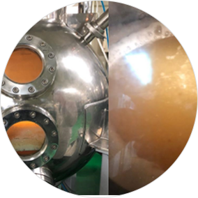

Contains 94% Paeonia Lactiflora Callus Cultures
Paeonia Lactiflora Callus Cultures developed by General Bio’s
internal R&D center, helps to make skin appear firmer and revitalized.
What is Paeonia Lactiflora?
Paeonia Lactiflora is a garden peony variety.
The root is used to treat abdominal pain, menstrual pain or disorders,
anemia, and contusions in Traditional Eastern Medicine practices.
In China, it has been cultivated since the Qin and Ming dynastys.
The history of its cultivation is older than the peony.
During the Qing dynasty, which came after the Song dynasty,
many varieties of this flower were recorded to be in existance.
They have been distributed around Korea, Mongolia, and East Siberia.
Callus Cultivation Process
01
Paeonia Lactiflora Callus Callus Cultivation Uses leaves, stem, leafstalk, and root fragments
02
Yellow callus is formed as a result of a cut on the surface of the plant tissue expands

03
Callus Culture Proliferation Process
04
Callus Culture Flask Suspension Process

05
Callus Culture Bioreactor Process

06
Pilot Plant Cultivation
Nutrient Rich Formula
Also contains Ginseng Callus Culture Extracts and
Ginseng Saponins to nourish the skin.
What are Calluses?
A callus is a formless lump of cells that can be cultivated and split-
proliferated under appropriate conditions by cutting a part of the plant
body. Plants are made up of differentiated cells, of which any can make
a callus. Calluses may proliferate infinitely if regularly cultivated,
but under the right conditions, it can regenerate the sprout, root, or
even a whole plant.
It is also known as stem cells, the tissue that forms to cover a plant
wound. Because the cells split actively, it contains a higher concentrat-
ion of biologically active substances effective for antioxidation,
reducing the appearance of wrinkles, and brightening skin tone.
Benefits of Callus Culture Cultivation